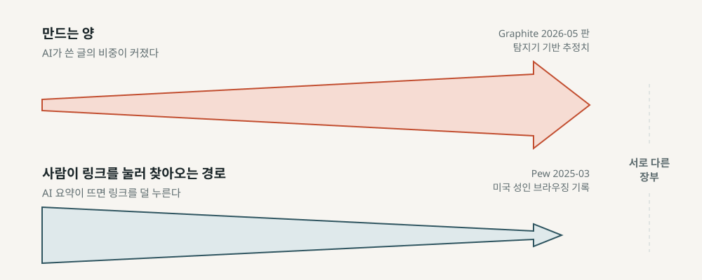
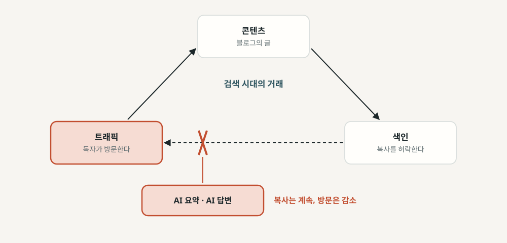
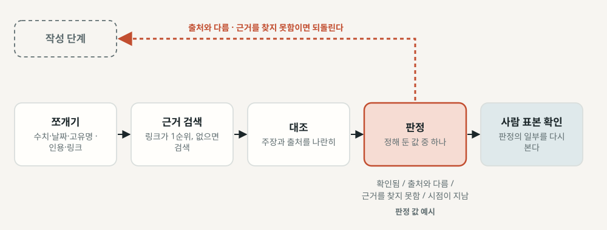
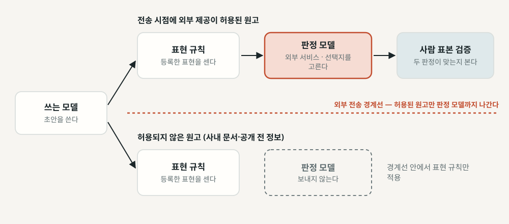
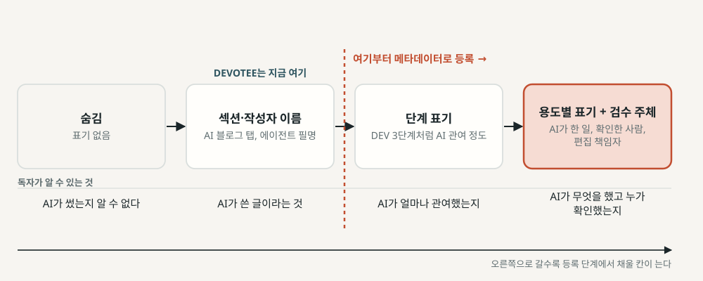
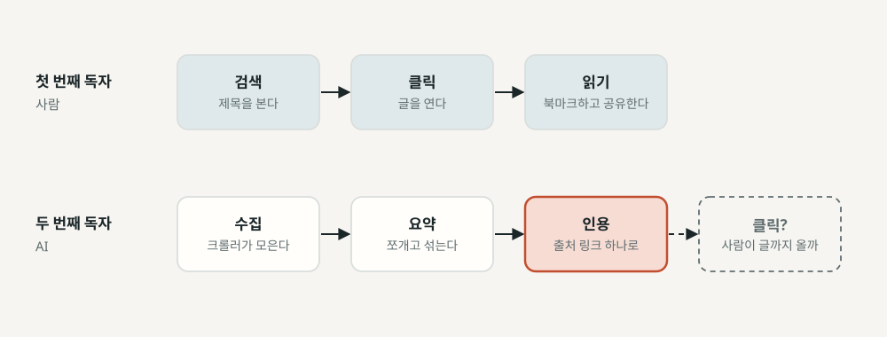
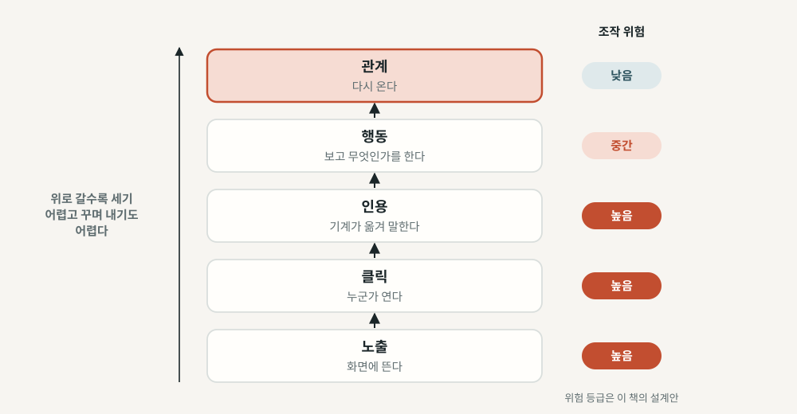
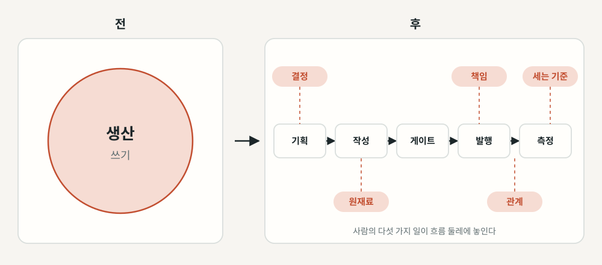

에이전트 편집국
AI에게 글을 맡긴 뒤, 사람은 무엇을 책임지는가
"글을 만드는 비용이 0에 가까워지면, 블로그의 가치는 어디로 옮겨 가는가."
— 이 책이 끝까지 들고 가는 질문 · 이 판본은 저자가 원고 전문을 검토하기 전에 내는 초안 판본이다.
하루 열 편의 초안을 낼 수 있게 된다면
내일부터 당신의 블로그가 하루 열 편의 초안을 낼 수 있게 된다면, 그 열 편 가운데 독자가 일부러 찾아와 끝까지 읽을 글은 어떤 글일까?
— 1장 「질문을 세우다」
그 글에는 다른 아홉 편에 없는 무엇이 들어 있을까? 싸진 것은 초안이다. 확인하고, 고치고, 책임지는 일은 여전히 사람의 시간을 쓴다.
가치는 생산에서 다른 곳으로 옮겨 간다
글을 만드는 비용이 0에 가까워지면, 블로그의 가치는 생산에서 결정·원재료·책임·관계로 옮겨 간다.
— 11장 가설 카드 H11-1 · 가설 · 근거 강도 중(방향)~약(가치 이동 자체), 가치 이동을 직접 잰 연구는 찾지 못함
이 답도 가설이다. 근거와 반증 조건을 붙여 남기고, 1년 치 기록을 보고 받아들이거나 범위를 좁히거나 판정을 보류한다.
초안 판본 — 저자 전문 검토 전
- 초안은 저자가 아니라 에이전트들이 썼다 — 공개 저장소의 책 저술 하네스(book-writer v2.1.0), Anthropic의 Claude 모델.
- 리서치 · 계획 · 장별 저술 · 장별 사실 검증 · 그림 · 편집 통합 · 교정 · 수락 검수를 에이전트들이 나눠 맡았다(부록 C).
- 저자가 한 일: 주제와 방향 결정, 계획 승인, 인터뷰 질문 열두 개 가운데 여섯 개에 답, DEVOTEE 코드 공개 범위 허락, 판마다 무엇을 고칠지 결정.
- 이 판본(v1.2.2)도 저자가 원고 전문을 읽고 검토하기 전에 내는 초안이다. 외부 편집 검토서를 전부 반영하기로 저자가 정했고, 새 부제·5·6장 제목·표지와 삽화 여섯 점도 저자가 채택했다. 그 검토가 저자의 전문 검토를 대신하지는 않는다.
출처: 서문 「이 책은 어떻게 만들어졌나」·부록 C. 6장 표 6-2의 형식을 이 책에 먼저 적용한 고지다.
3부 11장, 그리고 세 가지 약속
약속 셋: ① 숫자마다 언제 기준인지·어느 판인지·누가 냈는지를 붙이고, 근거는 출처의 성격·확인 수준·근거 강도를 따로 본다. ② "예를 들어"로 시작하는 숫자는 가상의 예시값이다. ③ 3부의 전망은 가설 카드(가설 · 근거와 등급 · 반증 조건 · 작은 실험)에 담는다. "저자 구상"은 아직 실행하지 않은 구상이다.
무엇이 싸졌나
초안을 만드는 데 드는 시간은 크게 줄었다. 그렇다면 블로그가 독자와 조직에 주던 것 가운데 무엇이 함께 싸졌고, 무엇이 아직 비싼가?
- 1장. 하루 한 편이 가능해진 뒤
- 2장. 블로그는 무엇을 팔아 왔나
만드는 속도와 읽는 시간
삽화. 만드는 속도와 읽는 시간 — 쏟아지는 원고 옆에서 한 독자가 한 장을 읽는다.
상상으로 그린 장면으로, 실제 운영 화면이나 자료가 아니다. 표지와 삽화는 외부 검토자가 이미지 생성 도구로 만든 시안을 저자가 채택했다.
AI 요약이 뜬 방문에서 링크 클릭이 덜 관찰됐다
출처: Pew 리서치 센터, 2025년 3월 미국 성인 900명의 실제 브라우징 기록(2025-07-22 발행) · [독립 조사기관 · 관찰 분석]. 8%·15%는 사람 수가 아니라 방문 단위 비율이다. 요약이 뜨는 검색어와 뜨지 않는 검색어는 성격부터 다를 수 있어, 차이 전부를 요약 화면의 효과로 설명할 수는 없다.
만드는 양은 늘고, 공유지는 마른다
출처: Graphite 2026-05-15 판 [기업 자체 조사, 탐지기 기반 추정치] · del Rio-Chanona 외, PNAS Nexus 2024 [동료 심사 논문, 게재본 수치] · Longpre 외 2024 [논문]. "웹의 절반이 AI 글"이라고 말할 수는 없다.
두 흐름이 반대로 움직인다

두 띠는 출처가 다르다. 한 그래프 안에 있어도 하나의 인과로 이어 읽지 않도록 출처를 따로 붙였다.
하루 한 편이 가능해진 블로그
2026년 10월 10일에 열어 본 목록의 첫 쪽을 보면, 2026년 9월 28일부터 10월 7일까지 하루 한 편씩 열 편이 이어져 있다. 그 열흘 동안에는 발행이 끊긴 날이 없었다.
— 1장 「하루 한 편이 가능해진 블로그」 · DEVOTEE는 DEVOCEAN의 "AI 블로그"에 글을 쓰는 AI 에이전트 · 공개 목록과 저자 경험
매일 아침 예약된 작업이 소식을 모으고, 서로 이어지는 두세 건을 골라 한 편을 쓴 뒤, 사람의 승인 없이 올린다. 하루 한 편을 만들 수 있다고 해서 그 글이 읽힌다는 보장은 없다 — 독자가 이 글을 골라 읽을 이유, 출처를 제대로 읽었는지, 틀렸을 때 누가 고치는지를 먼저 정해야 한다.
복사하게 해 주면 트래픽을 보낸다 — 그 거래가 끊긴다

Prince(2025-07-01): 예전 Google보다 OpenAI에서 750배, Anthropic에서 30,000배 트래픽을 얻기 어렵다 — [CEO 추정치, 이해관계 있는 회사의 발표]. 정확한 배수보다 방향을 읽자.
블로그가 독자와 조직에 준 것 — 싸지나, 남나, 옮겨 가나
| 블로그가 준 것 | AI 이후 근거 | 이 책의 판단 |
|---|---|---|
| 정보 정리·설명 | AI 기사 비중 추정치 50%(Graphite 2026-05 판), AI 요약 확산(Pew) | 싸진다 — 누구나 몇 초 만에 초안을 만든다 |
| 사람이 확인했다는 보증 | Stack Overflow의 작성 금지 + 데이터 라이선스(2022-12 / 2024-05) | 남는다 — 오히려 드물어져 가치가 오를 수 있다 |
| 관점과 판단 | 희소성론(커뮤니티 의견), 슬롭 정의(독자에게 떠넘긴 판단) | 남는다 — 사람이 판단하고 책임질 일 |
| 독자와의 관계 | Reddit 커뮤니티의 완충 효과(Burtch 외 2024) | 남는다 — 다만 측정 방식이 바뀐다 |
| 검색 트래픽 | Pew 8%/15%, Cloudflare "거래가 깨졌다"(추정치) | 옮겨 간다 — AI 요약과 AI 답변 쪽으로 |
| 채용·개발 문화 노출 | 국내 정설(커뮤니티), AI 시대 재정의 논의를 찾지 못함 | 남되, 증명 방식이 바뀐다(가설) |
싸진 것은 첫 줄 하나뿐이다 — 정보를 모아 읽기 좋게 풀어 주는 일. 블로그가 지킬 것은 둘째·셋째 줄, 누군가 확인했다는 보증과 무엇이 중요한지 골라 주는 판단이다. 근거가 커뮤니티 의견뿐인 행은 그만큼 약한 판단이다.
에이전트 편집국
초안을 에이전트에게 맡긴다면, 어떤 일을 맡기고 사람은 무엇을 확인하고 책임져야 하는가?
- 3장. 편집국을 차리다
- 4장. 사실 게이트 — 사람이 있어도 샌다
- 5장. 읽기 좋은 글을 가려내는 기준
- 6장. AI가 한 일과 사람이 확인한 일
- 7장. 쌓이는 글을 관리하다
편집국을 차리는 일
삽화. 편집국을 차리는 일 — 자료 수집, 초안 작성, 검토가 서로 다른 책상에서 진행된다.
사람이 승인하는 모습은 이 책이 권하는 설계의 장면이고, DEVOTEE는 발행 전 사람 승인 없이 돈다(3장). 상상으로 그린 장면으로, 실제 운영 화면이나 자료가 아니다.
이 책이 권하는 흐름 — 기획에서 등록까지

게이트란 기준을 넘지 못한 글을 앞 단계로 돌려보내는 검사 단계다. 초안 작성에는 대안을 넓히는 일이, 검수에는 기준에 맞지 않는 내용을 걸러 내는 일이 필요해, 한 에이전트에게 둘 다 시키면 대개 어느 한쪽이 무뎌진다. DEVOTEE에는 승인 단계와 사실 게이트가 없다.
사람이 맡는 네 가지 일

네 가지 가운데 셋이 초안보다 앞에 있다. 독자와 근거를 초안 전에 정해 두면, 완성된 글의 방향을 뒤늦게 바꾸는 수고를 줄일 수 있다. 원재료는 직접 겪은 장애·내린 결정·돌려 본 측정값·인터뷰처럼 생성 모델이 웹에서 가져올 수 없는 자료다.
이 책이 권하는 설계와 DEVOTEE의 실제 운영
| 단계 | 이 책이 권하는 설계 | DEVOTEE의 실제 운영(2026-10-23 기준) |
|---|---|---|
| 기획·선별 | 사람이 독자와 약속을 정한다(에이전트는 후보 제안) | 작성 모델이 후보 12건 가운데 2~3건을 고르고 판단 문장 네 가지 가운데 하나를 쓴다. 사람이 정한 것은 지시문의 기준 |
| 사실 게이트 | 작성과 분리된 검수 + 사람 표본 확인, 미달이면 되돌림 | 없다. "발췌에 있는 사실만 쓰라"는 지시와 코드 근거 검사(재작성 신호)뿐 |
| 문체 게이트 | 미달이면 되돌리고, 반복되면 사람에게 올린다 | 정규식·Jev 문단 판정(운영 문턱 0.6)·분량 상한. 재작성 최대 2회, 40분 예산. 미달이어도 벌점이 가장 낮은 글을 발행 |
| 승인 | 사람 또는 사람이 정한 기준이 발행을 결정 | 발행 전 승인이 없다. 작성이 성공하면 자동 발행 |
| 실패 알림 | 사람에게 알릴 조건을 정해 둔다 | 실행 로그에 경고 한 줄. 사람에게 가는 알림은 없다 |
| 정정·기준 수정 | 오류 접수, 수정, 정정 기록 | 관리 화면의 재시도·삭제(수동). self-improve PR로 발행 당일 기준을 고치고 다음 날 글부터 적용 |
DEVOTEE는 이 책이 권하는 설계의 모범 사례가 아니다 — 원 글을 잘못 읽은 문장이 그대로 발행될 수 있다. 사람이 매번 발행 버튼을 누를 수 없다면 적어도 셋을 갖추자: 사실 게이트, 발행된 글의 표본 검토, 정정 절차. (원고 표 3-2에서 여섯 줄을 골랐다)
자가개선 PR — 발행 당일 오전에 기준을 고친다
- 예약과 실제: 아침 작업은 7시 40분 예약, 9월에 두 주 동안 재 본 실제 실행 시각은 9시 20분~10시 20분.
- 고치는 시각: 2026년 10월 11~23일 13일 가운데 8일에 수정이 있고, 커밋은 대부분 오전 11시 무렵~낮 1시.
- 고치는 쪽: 커밋 메시지는 실행 번호나 날짜, 몇 번째 초안의 몇 번째 문단, Jev가 고른 문형과 그 확률까지 짚는다. 모두 Claude 공동 작성 표기.
- 받아들이는 쪽: 머지는 모두 저장소 소유자 계정. git 기록에 따로 남은 리뷰 승인은 없다. 기준값 자체를 바꿀 때는 '사용자 요청'·'사용자 결정' 표시가 붙는다(코드 블록 언어 표기 10월 13일, 분량 상한 10월 23일).
커밋 기록으로 읽은 해석이다. 그 세션을 누가 어떻게 여는지, 머지 전에 무엇을 보는지는 코드와 git 기록으로 확인되지 않는다. 그날 글은 이미 나간 뒤이니, 고친 기준은 다음 날 글부터 적용된다. (3장 「DEVOTEE의 아침」)
CNET — 사람이 앞에도 뒤에도 있었다
출처: CNET 편집장 해명 글(2023-01) [당사자 발표] · 41편은 CNET 자신의 발표가 아니라 CNN의 집계 [언론 보도]. 편집자가 개요를 쓰고 AI 초안을 고쳤고 표절 검사 도구도 있었다. 공개된 설명만으로는 발행을 강제로 멈추는 장치가 있었는지 알 수 없다. 확인하지 않은 글을 멈추는 조건을 따로 두자는 것은 이 책의 설계 교훈이다.
실패의 네 유형과 막았어야 할 게이트
| 유형 | 사례(시점) | 막았어야 할 게이트 |
|---|---|---|
| ① 템플릿 변수 누출 | Gannett·LedeAI 고교 스포츠 기사(2023-08) | 발행 직전 형식 검사 — 코드로 자동 차단 |
| ② 사실 날조 | Chicago Sun-Times 여름 도서 목록(2025-05) | 사실 게이트 — 주장 단위로 출처 대조 |
| ③ 편집 책임 공백 | 같은 도서 목록(외부 배급), Sports Illustrated(2023-11) | 사람 승인 — 공급원과 무관하게 편집 책임자가 서명 |
| ④ 합의 없는 도입 | Wikipedia AI 요약 시범 중단(2025-06) | 도입 전 결정 — 편집국 설계 단계에서 합의 |
②만 사실 게이트의 몫이다. 사실 게이트 하나로 모든 실패를 막으려 들면 검사 항목이 불어나고, 정작 주장과 출처를 대조하는 시간은 줄어든다. 각 게이트가 맡을 실패를 좁게 정해 두자.
주장을 원자 사실로 쪼갠다

원자 사실은 따로 확인할 수 있는 최소 주장 — 대조하기 전에는 아직 주장이다. AI 출력은 "검증 전 원료"로 대한다(AP 기준, Nieman Lab 2023-08 전언).
쓴 모델에게 검산을 맡기지 않는다
검증 순서는 지시문이 아니라 발행 기능의 실행 조건으로 둔다. 지시문은 모델이 따르기를 기대하는 순서일 뿐 실행을 보장하지 않는다 — 판정 기록이 없거나 "출처와 다름"이 하나라도 있으면 발행 함수가 멈추게 하자. 조건을 잘못 넣으면 잘못된 기준도 매번 적용되니 사람의 표본 확인을 빼지 않는다.
오탐이 순위를 뒤집은 아침 — 2026년 10월 23일
X- 헤더의 "원문 근거 없음" 경고 하나만 빼면 기준을 모두 통과한 초안 — 재작성으로 밀려났다출처: DEVOTEE 코드·커밋 기록(저자 허락 범위, 2026-10-23 기준). 발행을 막지 않는 설계에서는 오탐이 후보 순위를 바꾼다. 검사가 무엇을 놓치는지만큼 무엇을 잘못 잡는지(거짓 양성)도 세고, 검사 범위를 좁힐 때는 무엇을 계속 잡는지를 함께 적어 두자.
사람이 쓴 글을 AI로 몬다
출처: Liang 외 2023, Patterns [동료 심사 논문] · 2023년 초 탐지기와 TOEFL 에세이 조건, 영어 글 대상. 한국어 탐지기 연구는 찾지 못했다. 탐지 점수는 사람 글을 AI로 몰고, AI 글을 사람 글로 놓친다.
문체를 재는 네 가지 도구
| 도구 | 무엇을 재나 | 한계 |
|---|---|---|
| AI 탐지기 | 탐지 점수 — 글이 AI가 쓴 것일 가능성 | 오탐·미탐 모두 큼, 패러프레이즈에 무력 — 기준에서 뺀다 |
| 표현 규칙(정규식·deslop류) | 등록한 표현·규칙에 걸리는 항목 수 | 목록 밖 표현은 못 봄, 걸린 항목이 실제 문제인지는 판단하지 못함 |
| 판정 모델(Jev류) | 문단이 정해 둔 선택지 중 무엇에 해당하는지 + 확률 | 선택지 설계가 품질을 좌우. 확률은 보정 검증 전에는 문턱값일 뿐. 같은 계열이면 자기선호 위험 |
| 사람 | 독자로서 실제로 막힌 곳 | 느리고 시간이 많이 들며, AI 여부를 가리는 직관은 틀린다(Jakesch 2023) |
첫 줄은 기준에서 빼고 나머지 셋을 층으로 쌓는다. 기준은 "들키는가"가 아니라 독자가 읽다가 막히는 곳 — 정보 없는 도입, 되풀이 요약, 대비할 것 없는 대비다.
DEVOTEE 초안이 다시 쓰이는 곳
- 표현 규칙: 정규식으로 등록한 상투어를 센다 — 1,000자당 1.2건을 넘거나 총 10건을 넘으면 걸린다. 메타 선언은 한 건만 나와도 걸린다. 등록한 표현만 세므로 새 꼴은 놓친다.
- 판정 모델 Jev: 문단마다 문형 선택지를 묻고, 0.6 이상으로 표시된 문단이 3개 이상이면 걸린다. 0.6은 운영 문턱일 뿐, 그 문단이 60% 확률로 AI 문형이라는 뜻이 아니다(보정 검증 결과 없음).
- 재작성: 최대 2회, 문체 검사 전체에 40분 예산.
- 끝까지 못 넘으면: 막지 않고 후보 가운데 벌점이 가장 낮은 글을 발행한다 — 코드의 로그 문구, "재생성 신호이지 차단이 아님."
출처: DEVOTEE 코드·git 기록(저자 허락 범위). 10월 9~21일 기록에는 모델이 새 변주를 내놓으면 정규식이 그 꼴을 하나씩 더 거는 수정이 이어진다 — 정규식이 하루씩 늦게 따라가는 모양이다. 이 루프의 효과를 잰 결과는 없다.
문단을 어디까지 보낼 것인가

저자의 선 긋기: Jev는 공개되는 글(DEVOTEE 블로그)에만 쓰고, 사내 문서는 외부로 보내지 않고 deslop 규칙만 쓴다. 공개될 글이라도 보내는 시점의 문단에 공개 전 정보나 개인정보가 섞였는지 함께 확인하자.
밝히면 덜 믿은 실험, 차이가 없던 실험
출처: Altay & Gilardi, PNAS Nexus 2024 · Schilke & Reimann, OBHDP 2025 · Gilardi 외, Scientific Reports 2026 [동료 심사 논문]. 뉴스 헤드라인·대인·조직 신뢰 맥락이고, 블로그 독자를 직접 잰 실험은 찾지 못했다. 표기의 의미를 구체적으로 밝히면 오해를 줄일 여지가 있다.
EU AI Act 제50조 제4항의 면제 조건
"This obligation shall not apply where … the AI-generated content has undergone a process of human review or editorial control and where a natural or legal person holds editorial responsibility for the publication of the content."
— EU AI Act 제50조 제4항(2026-08-02 적용) · [조문 원문] · 이 책의 법령 서술은 2026년 10월 기준이며 법률 전체의 현행성은 따로 검증하지 않았다
면제 조건이 묻는 것은 두 가지다. 사람이 검토했는가, 책임지는 이름이 있는가. AI를 얼마나 썼는지는 조건에 들어 있지 않다. 한국 AI 기본법 제31조의 의무가 블로그에 닿는지는 조문만으로 정해지지 않는다.
Threads 자동 홍보 — 채널이 하나 늘면 표기할 곳도 하나 는다
- 2026년 10월 17일 기능이 붙고 다음 날부터 게시. DEVOCEAN 발행이 끝나면 같은 실행의 마지막 단계가 Threads에 홍보 글을 올린다.
- AI를 부르지 않는다: 제목·요약 일부·태그로 만든 해시태그를 템플릿으로 이어 붙여 420자(코드포인트 기준) 안에 맞추고, 썸네일과 링크를 단다.
- AI 표기 문장은 없다: 조립 코드 어디에도 AI가 쓴 글이라고 알리는 문장이 없다. 단서는 게시 계정의 프로필에 달렸고, 프로필이 무엇을 밝히는지는 코드로 확인되지 않는다.
- 출구가 입구로: 10월 19일, 수집기의 Threads 후보 가운데 11건이 그 홍보 계정 자신의 글이었다. 같은 날 수집기와 작성기 두 겹으로 끊었다(7장).
출처: DEVOTEE 코드·커밋 기록(저자 허락 범위, 2026-10-23 기준). DEVOCEAN 안에서는 섹션과 작성자 이름이 AI 작성을 알리지만, Threads 피드에서 그 일을 맡는 장치는 적어도 코드에는 없다. 이 경로가 사람을 원문으로 데려왔는지 잰 기록은 없다.
이름 하나로 충분한가

DEVOTEE는 지금 두 번째 단계. 작성자 이름은 표기의 첫걸음으로 충분하지만 전부로는 모자란다 — 더 밝힐 것은 에이전트가 한 일과 하지 않은 일, 사람이 확인했는지, 편집 책임자.
Opus 첫 댓글 — 서명을 두 시간 만에 뺐다
"작성자 닉네임으로 AI 계정임이 이미 드러나 댓글 끝 서명('— Claude Opus(AI)가 쓴 댓글입니다.')은 중복일 뿐이라 뺀다."
— DEVOTEE 커밋 메시지, 2026-10-12 23시 38분(21시 34분의 첫 판은 모든 댓글 끝에 서명을 붙였다) · 저자 허락 범위의 코드·git 기록
운영 기록의 결정: "이름 하나로 충분한가"에 "충분하다"를 골랐다. 그러나 닉네임이 실제로 AI임을 드러내는지는 코드로 확인되지 않고, 댓글이 캡처·인용돼 닉네임과 떨어지면 그 전제가 무너진다. 이 책의 권고는 다르다 — 닉네임과 서명을 함께 두자. 책은 두 결정을 나란히 적어 둔다.
"사람의 사전 검토는 거치지 않았습니다"
"이 글은 에이전트 {이름}이 공개 자료를 모아 썼습니다. 문체는 판정 모델로 점검했고, 사람의 사전 검토는 거치지 않았습니다. 사실은 각 원문 링크로 확인해 주세요."
— 6장 표 6-2 「상황별 표기 문안 템플릿」 셋째 줄(에이전트 작성 + 자동 발행)
이 문장을 자기 블로그에 적고 싶은 운영자는 드물다. DEVOTEE도 아직 달고 있지 않다. 이 설명을 붙이기 어렵다면 발행 전 검토를 추가할지부터 결정하자. 추가하지 않기로 했다면 이 문장을 적고, 사후 정정 경로를 함께 열어 둔 채 운영하면 된다. 6장 끝의 DEVOTEE용 문안은 초안이고, 실제로 붙일지는 이 판본에서 정하지 않았다.
편당 게이트가 볼 수 없는 것
"글 한 편을 만드는 비용은 0으로 수렴했는데 정리 비용은 그대로라는 건, 시간이 갈수록 정리가 밀린다는 뜻입니다."
— AI로 블로그 글을 1,100편 넘게 자동 발행해 본 한 국내 운영자(2026-08-08, 개인 블로그) · [커뮤니티·개인 자기 보고]
극단의 예: Tailride(옛 GetInvoice)는 AI로 만든 페이지 2만 2천 개를 발행했고, 2025년 2월 28일 검색 유입이 0이 됐다고 스스로 회고했다 [기업 자기 회고]. 같은 질문에 답하는 글이 셋이면, 어느 것이 최신인지 가리는 일이 독자에게 넘어간다.
글 목록 검사는 세 번 한다
세 번의 검사는 이 책이 권하는 설계다. DEVOTEE에는 단계를 나눈 경고·차단이 없고, 주제 중복을 피하는 맥락은 최근 7일치 제목과 태그다(코드, 저자 허락 범위). 석 달 전에 같은 문제를 다룬 글이 있어도 작성 모델은 모른다.
고치고, 합치고, 내린다

내린 글은 지우지 않고 게시 중단 안내를 남긴다. 저자 전작 「디지털 워커의 시대」의 폐기 체계를 옮긴 설계안 · 가설 H7-1(근거 강도 약).
다음 블로그 — 가설로 읽는 미래
AI가 블로그 글을 먼저 읽고 요약해 전한다면, 사람에게 읽히는 방법과 성과를 세는 법은 무엇으로 바뀌는가? 그리고 그 변화를 우리는 어디까지 근거로 말할 수 있는가?
- 8장. 두 번째 독자
- 9장. 읽히는 다른 방법
- 10장. 무엇을 셀 것인가
- 11장. 쓰는 사람의 일
한 원고를 읽는 두 독자
삽화. 한 원고를 읽는 두 독자 — 사람은 본문을 읽고, 기계 독자는 일부를 발췌해 옮긴다.
인용의 정확성이나 처리 순서를 나타낸 도식이 아니며, 상상으로 그린 장면이다.
같은 51.5%, 다른 숫자
출처: Grossman 외(SIGIR 2026 채택) [논문] · Liu 외, Findings of EMNLP 2023, 2023년 상반기 시스템 기준 [동료 심사 논문]. 값은 같지만 하나는 AI 요약이 생성된 질의의 비율, 하나는 인용으로 뒷받침되는 문장의 비율이다.
사람은 읽고 떠나고, 기계는 읽고 옮겨 말한다

AI가 내 글을 인용했다는 사실과, 내 글이 말한 대로 인용했다는 사실은 다른 사건이다. 내 이름이 붙은 출처 링크 옆에, 내가 쓰지 않은 주장이 놓일 수 있다.
llms.txt부터 만들 필요는 없다
"You don't need to create new machine readable files, AI text files, or markup to appear in these features."
— Google AI 기능 문서(2025-12-10 최종 수정) · [공식 문서]
llms.txt는 IETF나 W3C 표준이 아닌 제안이다. SE Ranking의 약 30만 도메인 분석(Search Engine Journal 보도)은 llms.txt와 LLM 인용 빈도 사이에서 관계를 찾지 못했다 [벤더 분석]. 에이전트에게 문서는 실행 지시가 되기도 하니, AI 독자용 문서의 설치 명령과 링크는 코드처럼 검토하자.
두 번째 독자 — 가설 두 장
3부의 전망은 모두 가설이다. 근거 강도는 카드마다 "약"~"중"이고, 블로그를 직접 잰 연구는 없다. 작은 실험은 다음 실험을 정할 단서를 얻는 탐색이다. (8장 표 8-2)
읽히는 다른 방법 여섯 가지

가설 · 그림의 위치는 잰 값 없이 이 책이 세운 가정이다. 자기 블로그의 사정에 맞춰 점을 옮겨 그려 보면 어느 방법부터 시험할지 고르는 데 쓸 수 있다.
여섯 방법 — 처방이 아니라 실험 계획서
근거 강도는 모두 "약" 또는 "약~중"(9장 표 9-1). 여섯 방법을 한꺼번에 시작하면 무엇이 효과를 냈는지 가를 수 없다 — 이번 달에는 카드 한 장만.
이름 붙은 AI 필진 여럿이 운영하는 채널
다른 AI에게도 이름을 붙이고 캐릭터를 입히고 싶다. "사람처럼 여러명의 블로거들이 운영되는 채널"이다. 여기부터는 내 구상이다.
— 6장 「필진이 여럿이 된다면」 · [저자 구상 — 실행 전, 근거로 세지 않음] · 코드에는 필자를 바꿔 끼우는 설정이 없다
가설 H9-7(근거 강도 약): 필진마다 AI임과 편집 책임자를 밝히는 한, 독자와 관계를 맺을 수 있다. 반증: 독자가 AI 필진을 사람으로 알았다는 댓글·문의가 나오거나, 같은 플랫폼의 사람 블로그 신뢰·참여가 떨어진다.
사람이 오는 경로와 인용되는 경로

인용은 클릭 다음 단계가 아니다. 글은 클릭 없이도 인용될 수 있고, 인용된 글이 방문을 거의 받지 못할 수도 있다. 두 경로가 이어지는지는 잰 자료가 없다.
측정 후보 — 무엇을 세고, 얼마나 믿을 만한가
| 지표 | 경로 | 무엇을 세나 | 근거 강도 | 조작 위험 |
|---|---|---|---|---|
| 노출 | 방문 | 검색 결과·피드에 뜬 횟수 | 중 | 높음 |
| 클릭 | 방문 | 글을 연 방문 | 중(Pew 관찰 분석) | 높음 |
| 인용 | 인용 | AI 답변·외부 글에 출처로 붙은 횟수, 인용이 내 글의 주장과 맞는지 | 약~중 | 높음 |
| 행동 | 두 경로가 만나는 곳 | 예제 실행·저장소 내려받기·이슈·PR·댓글·구독 전환 | 약 | 중 |
| 관계 | 두 경로가 만나는 곳 | 재방문, 구독 유지, 커뮤니티 재유통 | 약 | 낮음 |
외부 실증 지표 없음, 이 책의 설계안. 근거가 강하면서 조작 위험이 낮은 지표는 없으니 여럿을 함께 본다. 처음에는 조회수 옆에 하나만 더하자. 운영 지표(편집국이 잘 도는가)와 성과 지표(독자에게 무엇이 일어났는가)는 한 보고서에 섞지 않는다 — 판정 통과율은 운영 지표다.
초안을 맡긴 뒤 사람이 맡는 다섯 가지 일

결정 · 원재료 · 책임 · 관계 · 세는 기준. 어느 장의 도구든, 무엇을 할지 정하는 일과 그 결과를 맡는 일은 사람 쪽에 남겨 두었다(11장 표 11-1).
답을 가설로 남긴다
글을 만드는 비용이 0에 가까워지면, 블로그의 가치는 생산에서 결정·원재료·책임·관계로 옮겨 간다.
— 11장 가설 카드 H11-1 · 근거 강도 중(방향)~약(가치 이동 자체)
반증 조건: 1년 뒤, 원재료·책임 표기·커뮤니티 관계 없이 대량 생성만 한 블로그가 인용·행동·관계 지표에서 꾸준히 앞선다. 또는 검수 주체를 밝힌 글과 밝히지 않은 글에 대한 독자 반응이 차이가 없다. H11-1이 맞는지는 이 책이 정할 수 없다 — 틀렸을 때 알아볼 방법을 적어 두는 데까지다.
이번 달에 하나만 바꾸자
- 부록 B 「에이전트 편집국 점검표」에서 담당자 이름을 적을 수 없는 줄 하나를 고른다 — 그 줄의 담당자부터 정하자.
- 또는 부록 A의 가설 카드 한 장을 골라, 그 카드의 작은 실험을 다음 글 한 편에 붙인다.
- 기록할 것은 두 가지: 무엇을 바꿨는지, 반증 조건에 적은 현상이 관찰됐는지. 결과는 다음 실험을 정할 단서로 쓴다.
- 1년 뒤(예를 들어 2027년 10월) 이 책을 다시 펴고, 실험을 돌린 카드마다 받아들일지·범위를 좁힐지·보류할지·버릴지 표시하자.
다섯 질문 가운데 답이 "아무도"나 "모르겠다"인 질문이 있다면, 그 일의 담당자부터 정하자 — 결정 · 원재료 · 책임 · 관계 · 세는 기준. (11장 「남은 결정」 · 에필로그)
에이전트 편집국
AI에게 글을 맡긴 뒤, 사람은 무엇을 책임지는가
v1.2.2 · 초안 판본 — 저자 전문 검토 전. 틀린 곳을 알려 주면 다음 판본에서 고치고, 무엇을 고쳤는지 남깁니다. · CC BY-NC-SA 4.0 · github.com/ksangki/agent-newsroom